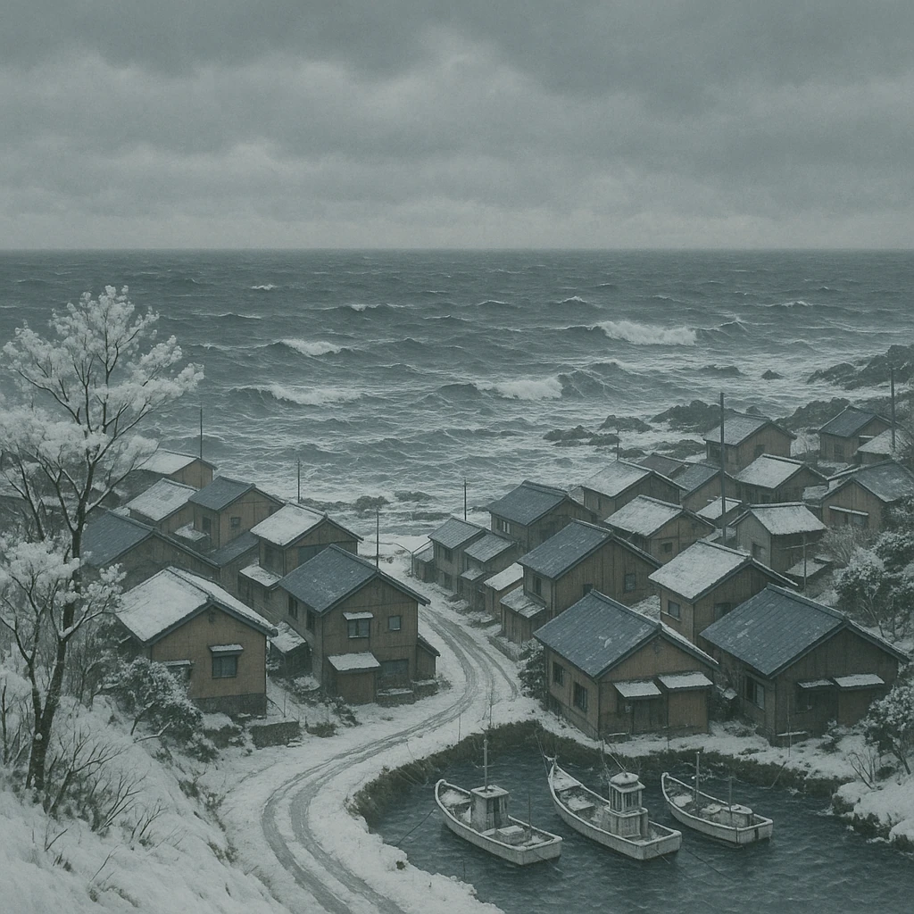
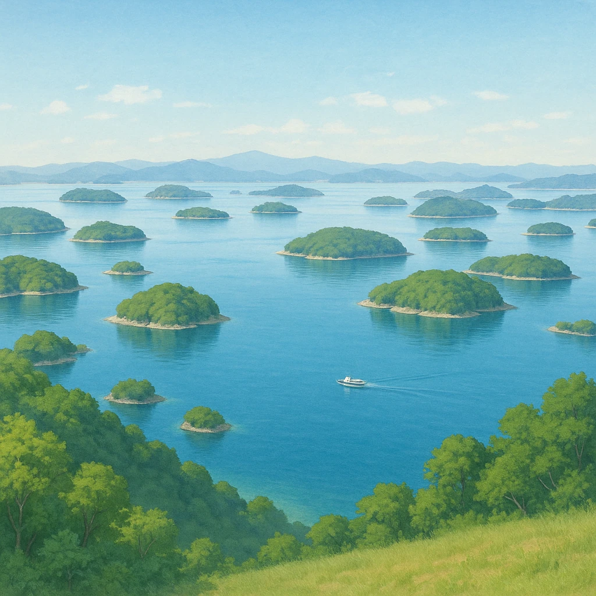
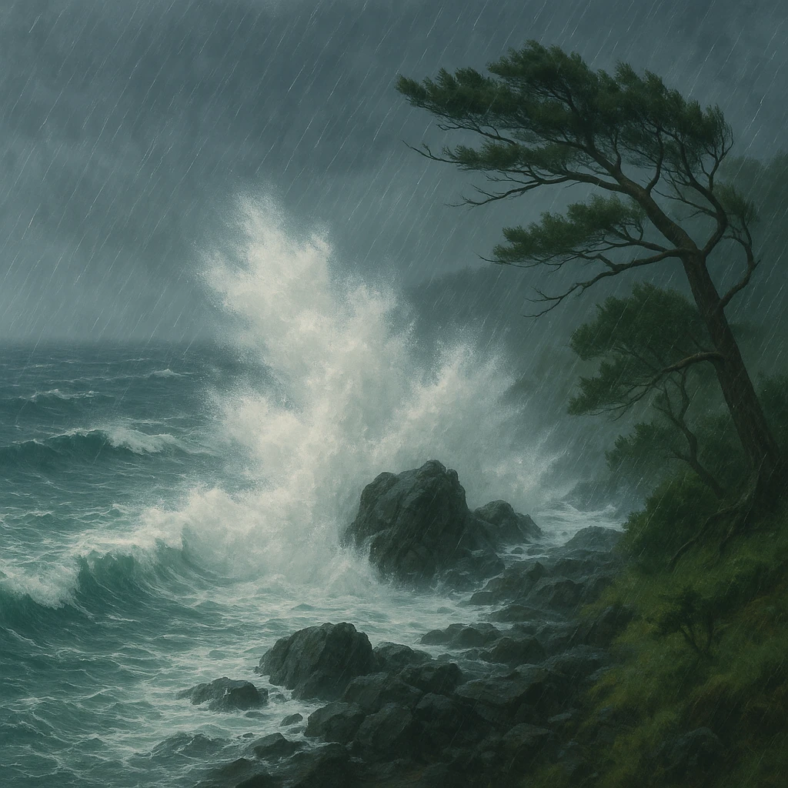

1-6
気候
帯が変われば、
気候
も変わる
山陰

①
日本海側の気候
冬
に雨や雪が多い。北西の季節風が日本海の水蒸気を運んでくる。
冬に多い
瀬戸内

②
瀬戸内の気候
1年を通して
雨が少ない
。あたたかいが水不足になりやすい。
少雨
南四国

③
太平洋側の気候
夏
に雨が多い。南東の季節風と台風。冬もあたたかい。
夏に多い
対応表
山陰＝
日本海側
／瀬戸内＝
瀬戸内
／南四国＝
太平洋側
。区分の名前とセットで丸ごと覚える。
第14章 中国・四国地方
SEED EDUCATION